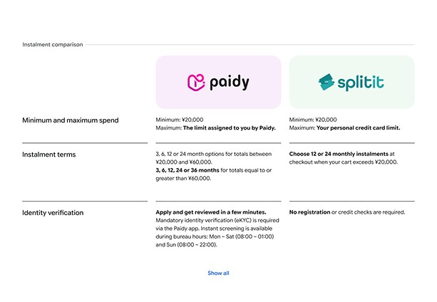
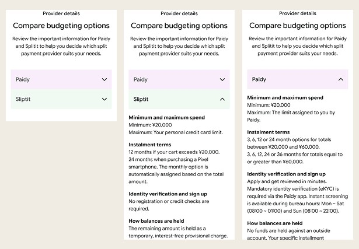
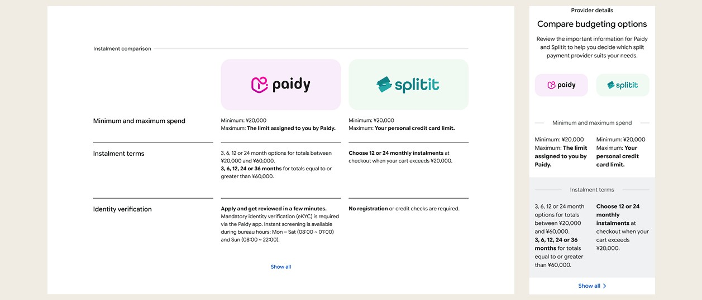

Context & challenge
Google Store Japan's financing page was built around a single BNPL provider, Splitit. Splitit doesn't support JCB, Japan's largest card issuer — a real coverage gap for a large share of Japanese cardholders. Paidy, Japan's dominant BNPL provider with over 20 million downloads and 5 million verified users, needed to be added to close it. The challenge wasn't just fitting a second provider onto the page, it was doing that without the design implying Google favoured one provider over the other.
Role & contribution
Senior UX/UI Designer, working with Matt (Creative Director), Lauren (Copywriter), and Damian (Project Manager).
The ask: develop an insight-driven strategy to integrate Paidy into the existing Splitit financing page on Google Store Japan, positioning it as the definitive source of truth for BNPL, online and in-store.
Research & insights
Japan's BNPL market behaves differently to Australia's. Japanese consumers are risk-averse rather than impulsive, using BNPL as a structured budgeting tool, and 70 to 80% of smartphone purchases in Japan already happen through some form of installment plan. That risk-aversion shapes what the page needs to contain: Japanese consumers expect exhaustive specs, FAQs, and financing disclosures upfront — the opposite of a minimalist page that reveals detail at checkout.
The sharpest insight came from the identity verification step itself. Paidy's eKYC process causes 29.2% of users to drop off, mostly from unclear instructions or privacy anxiety rather than actual difficulty. That number justified an explicit, upfront checklist of exactly which documents are needed before a user starts the flow.
Design strategy & approach
Benchmarking Apple, Samsung, three national mobile carriers, and two major electronics retailers surfaced a consistent trade-off: sites either buried detail behind navigation to stay clean, or exposed everything and became dense and slow on mobile. Neither fully solved what this page needed — showing two providers side by side without visually favouring either.
We front-loaded the page with what users want to know at a glance, then layered granular detail underneath, mobile-first throughout. A side-by-side comparison table tested well on desktop in round one, but on mobile it ran long and dense enough that we recommended dropping it for an accordion pattern instead, even though the client preferred the desktop version. Mobile usability took priority over a stakeholder's initial preference.


Solution
The hero module originally carried a CTA for Paidy with no equivalent for Splitit, which read as lopsided, so we removed both hero CTAs and moved sign-up into the details module below, where both providers sit with equal visual weight.
Two modules were new additions specific to Paidy: an in-store payment module tied to the physical Google Store opening in Omotesando, walking users through the same QR-code sign-up in person, and an account log-in module so users already registered with either provider could check their status without leaving the page.

Reflection & learnings
Designing for two competing providers on one page is a different problem to introducing a single new one. The constraint wasn't "how do we sell Paidy," it was "how do we let the user choose without the page choosing for them," and the CTA-balance issue in the hero module is the clearest evidence that constraint was taken seriously rather than assumed away.